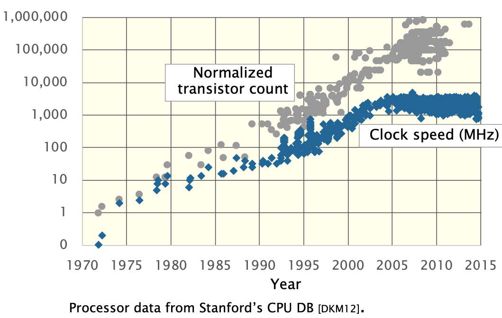
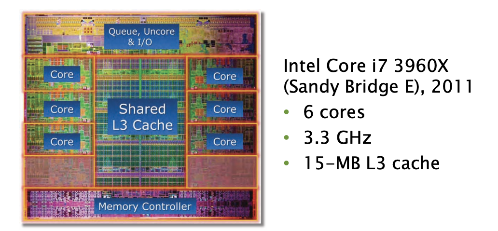
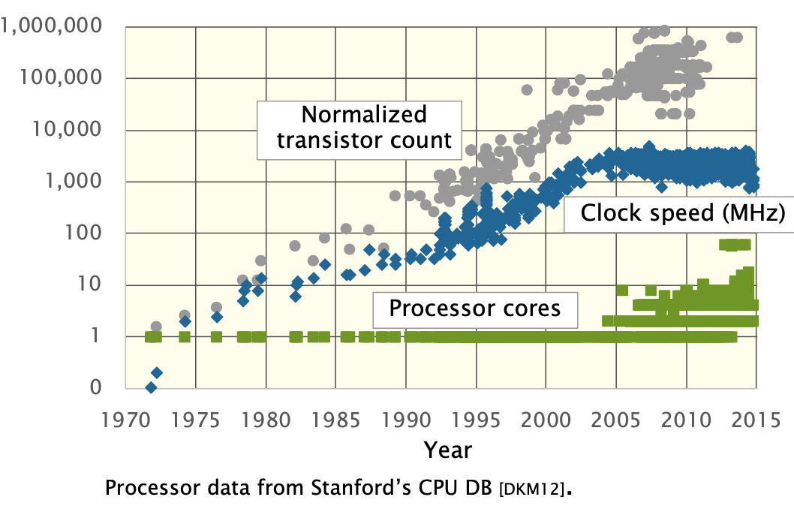
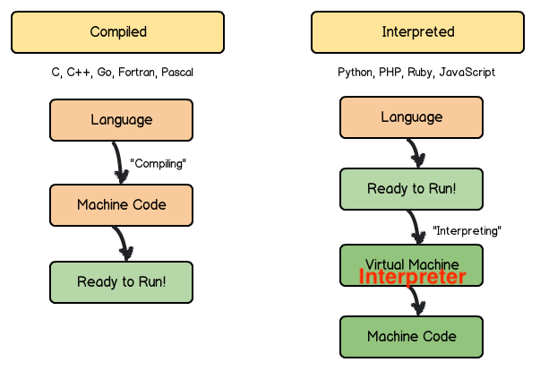
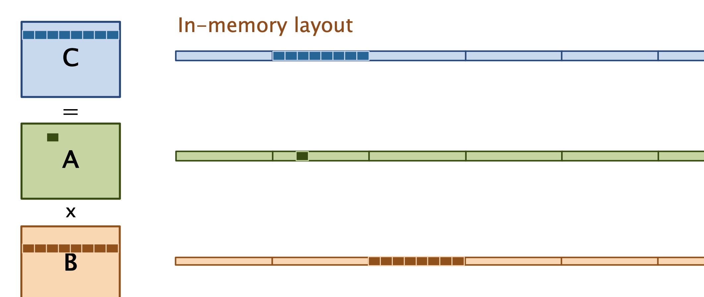
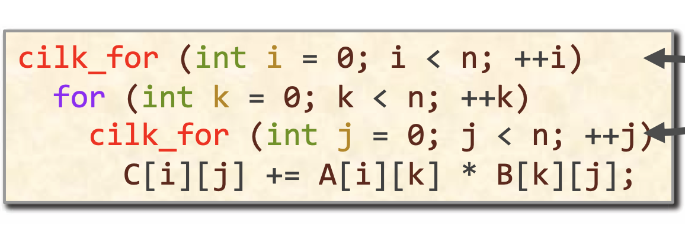

Angorithm4 Webinar #1
Host by Jiawei Wang 2021-10-15
1 Why Performance Engineering?
Currency
- Performance is the currency of computing. You can often “buy” needed properties with performance.
- Functionality Reliability Correctness Testability Maintainability...
Modern Hardware (Complex)
- As the hardware become more and more complex, How can we write software to utilize modern hardware efficiently?
1) The Second Generation (1955–65) Transistors and Batch Systems

- Many programs strained the machine’s resources.
- Software performance engineering was common
- Programs had to be planned around the machine.
- No "Performance Engineering"
2) The Fourth Generation (1980-2004) Personal Computers


Why and How? -> Moore’s Law and Dennard Scaling

-
Moore’s Law -- observation by Gordon Moore in 1965
- the number of transistors on a microchip doubled about every year.
- How? 8 bits -> 16 bits -> 32 bits + smaller transistors
-
Dennard Scaling As transistors get smaller, their power density stays constant.
If you found something was too slow, wait couple of years!
3) The Fourth Generation (also) (2004-present)
All that came to end after 2004

1. Power Density (Clock Rate)
 If the scaling of clock frequency had continued its trend of 25%-30% increase per year.
The tempreture of chip would reach the sun's surface! (Dannard Scaling X)
If the scaling of clock frequency had continued its trend of 25%-30% increase per year.
The tempreture of chip would reach the sun's surface! (Dannard Scaling X)
Solution -> keep the frequency unchanged
2. Semicondictor fabrication (growing slower than before)
- 0.5um -> 0.35um (1 year)
- 22nm -> 14nm (3 years)
- 14nm -> 10nm (4 years)

Solution -> Introduce Paralleism in the form of multicore processors.

- To scale performance, processor manufacturers put many processing cores on the microprocessor chip.
- Each generation of Moore’s Law potentially doubles the number of cores. (still work!)

The Performance is No Longer Free
- Moore’s Law continues to increase computer performance.
- We couldn't just speed up the hardware like the old days.
- If you wants to use that potential, you had to do parallel programming.etc.
Hardware
- big multicore processors
- complex cache hierarchies
- wide vector units
- GPU
- FPGA
Software
- parallel-processing
- vector units
- caches
- prefetchers
- GPU’s
- hyperthreading
- dynamic frequency scaling
- ...
We need to write software to utilize modern hardware efficiently.
2. Different Level of Abstraction

Square-Matrix Multiplication

1) Python
import sys, random
from time import *
n = 4096
A = [[random.random()
for row in xrange(n)]
for col in xrange(n)]
B = [[random.random()
for row in xrange(n)]
for col in xrange(n)]
C = [[0 for row in xrange(n)
for col in xrange(n)]]
start = time()
for i in xrange(n):
for j in xrange(n):
for k in xrange(n):
C[i][j] += A[i][k] * B[k][j]
end = time()
print '%0.6f' % (end - start)
- Running time = 21042 seconds -> 6 hours
- Analysis:
- C + A * B: Two opeartions each iteration
- When n is
4096(2^13)There are2 * n^3 = 2 * (2^13)^3 = 2^37floating point operations. - Python gets
2^37 / 21042 = 6.25Mfloating point opeartions per second. - Peak =
836Gfloating point opeartions per second - Python gets
0.00075%of peak
2) Java
import java.util.Random;
public class mm_java {
static int n = 4096;
static double[][] A = new double[n][n];
static double[][] B = new double[n][n];
static double[][] C = new double[n][n];
public static void main(String[], args) {
Random r = new Random();
for (int i=0; i<n; i++) {
for (int j=0; j<n; j++) {
A[i][j] = r.nextDouble();
B[i][j] = r.nextDouble();
C[i][j] = 0;
}
}
long start = System.nanoTime();
for (int i = 0; i < n; i++) {
for (int j = 0; j < n; j++) {
for (int k = 0; k < n; k++) {
C[i][j] += A[i][k] * B[k][j];
}
}
}
long stop = System.nanoTime();
double tdiff = (stop - start) * 1e-9;
System.out.println(tdiff);
}
}
- Running time = 2738 seconds -> 46 minutes
- Analysis: About 8.8x faster than Python
- ...
- Java gets
0.007%of peak
3) C
#include <stdlib.h>
#include <stdio.h>
#include <sys/time.h>
#define n 4096
double A[n][n]; double B[n][n]; double C[n][n];
float tdiff(struct timeval *start, struct timeval *end) {
return (end->tv_sec- start->tv_sec) + 1e-6*(end->tv_usec-start->tv_usec);
}
int main(int argc, const char *argv[]) {
for (int i = 0; i < n; ++i) {
for (int j = 0; j < n; ++j) {
A[i][j] = (double)rand() / (double)RAND_MAX;
B[i][j] = (double)rand() / (double)RAND_MAX;
C[i][j] = 0;
}
}
struct timeval start, and;
gettimeofday(&start, NULL);
for (int i = 0; i < n; ++i) {
for (int j = 0; j < n; ++j) {
for (int k = 0; k < n; ++k) {
C[i][j] += A[i][k] * B[k][j];
}
}
}
gettimeofday(&end, NULL);
printf("0.6f\n", tdiff(&start, &end));
return 0;
}
- Running time = 1156 seconds -> 19 minutes
- Analysis: About 2x faster than Java
- About 18x faster than Python
- ...
- C gets
0.014%of peak
|Version |Implementation | Running Time |Relative Speedup |Absolute Speedup |Percent of peak | |:--:|:--:|:--:|:--:|:--:|:--:| | 1 | Python |21041.67 | 1 | 1 | 0.00075 | | 2 | Java | 2387.32 | 8.81 | 9 | 0.007 | | 3 | C | 1155.77 | 2.07 | 18 | 0.014 |
Why?

1. Interpreted vs Compiled

- The interpreter reads, interprets, and performs each program statement and updates the machine state.
- The interpreted Language are more flexible than Compiled Language
- Since it is execute line by line and do not need the compile time
- Example:
- 1. Chrome is written in C++ and C (Compiled Language)
- But it uses javascript as its interface language
- 2. Unreal Engine is written in C++
- But most of the time for a normal game coder, he uses Python/C#/Lua as its developing language
2. Dynamic vs Static
 Java has an interpreter as well as a virtual machine, and Python has a virtual machine as well as an interpreter.
Java has an interpreter as well as a virtual machine, and Python has a virtual machine as well as an interpreter.
-
The Java virtual machine requires the programmer to specify the primitive data type of each variable.
- This provides sufficient information for Java bytecode to be interpreted and executed by the Java virtual machine.
-
The Python virtual machine is more complex in the sense that it takes on the additional task of pausing before the execution of each operation to determine the primitive data types for each variable or data structure involved in the operation.
- Python frees the programmer from thinking in terms of primitive data types, and allows operations to be expressed at a higher level. The price of this freedom is performance.
The virtual machines of dynamic languages like Python implement some idealized logical machine, and don't necessarily correspond very closely to any real physical hardware.
The Java virtual machine, in contrast, is more similar in functionality to a classical C compiler, except that instead of emitting machine instructions, it executes built-in routines.
Why Java is designed in this way?
- It is for sake of speed and portability at the same time.
- If you merely interpret the java file with an interpreter you would have portability but not speed.
- If you have to compile the code for a given processor architecture you would have speed but not portability.
- With the bytecode, you compile the code (into bytecode) for a common machine that will execute it (the JVM) it is a compromise between speed and portability.
3. Matrix Multiplication
1. Loop Order:
We can change the order of the loops in this program without affecting its correctness.
for (int i = 0; i < n; ++i) {
for (int k = 0; k < n; ++k) {
for (int j = 0; j < n; ++j) {
C[i][j] += A[i][k] * B[k][j];
}
}
}
|Loop Order | Running Time| |:--:|:--:| |i, j, k| 1155.77| |i, k, j| 177.68 | |j, i, k| 1080.61| |j, k, i| 3056.63 | |k, i, j| 179.21 | |k, j, i| 3032.82 |
- Loop order affects running time by a factor of 18!


for (int i = 0; i < n; ++i) {
for (int j = 0; j < n; ++j) {
for (int k = 0; k < n; ++k) {
C[i][j] += A[i][k] * B[k][j];
}
}
}
for (int i = 0; i < n; ++i) {
for (int k = 0; k < n; ++k) {
for (int j = 0; j < n; ++j) {
C[i][j] += A[i][k] * B[k][j];
}
}
}


2.Parallel Programming

3. Compiler Optimization